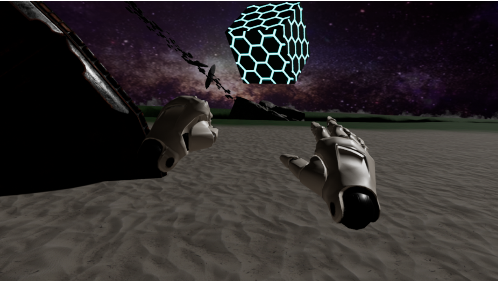
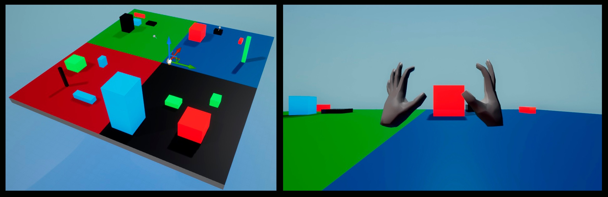

The purpose of this project was to create an interface for a presenter to control 3D content in a fulldome. The current interaction needs two people to work in tandem, the presenter and an engineer which is who navigates through the content with a computer and a mouse-keyboard combination.
This interface makes the interaction between the presenter and the content direct removing the need of an engineer. Actions were defined to manipulate and navigate the content and hand gestures were tied to trigger these actions. Leap Motion technology was used for the hand tracking which allowed the user to forgo using additional hardware as the hands act as controllers.

I worked in tandem with another UX designer for this project. We used a double diamond model as such this project started with research, then we did on-site visits to the fulldome and had bodystorming sessions to understand the user. We also had an interview with an interaction expert on-site to gather further insights and current guidelines. Afterwards we synthesized all the information to focus in the relevant parts for our project.
During the ideation phase a lot of ideas were produced with brainstorming sessions, which were followed by workshops where we used the affinity diagram and dot voting methods to define the actions to be conceptualized into gestures, and a weighted matrix to determine which technology was to be used.
We Unreal Engine 4 for the development and it allowed us to use role-playing and experience prototyping by using the VR capabilities to test the prototype internally in almost every step of the development. We had some workshops with other UX designers with follow up short interviews.
After some iterations the prototype was tested with fulldome interaction experts using a usability test and a system usability scale questionnaire to measure functionality, a UX curve to understand the users’ experience and emotions while using the prototype, and an interview to clarify any unclear points from the UX curve and round up some last opinions. With the results some changes were made and the project was presented.

Some of the gestures that were developed:
The main methods I used for this project were:
The tools I used for this project were: